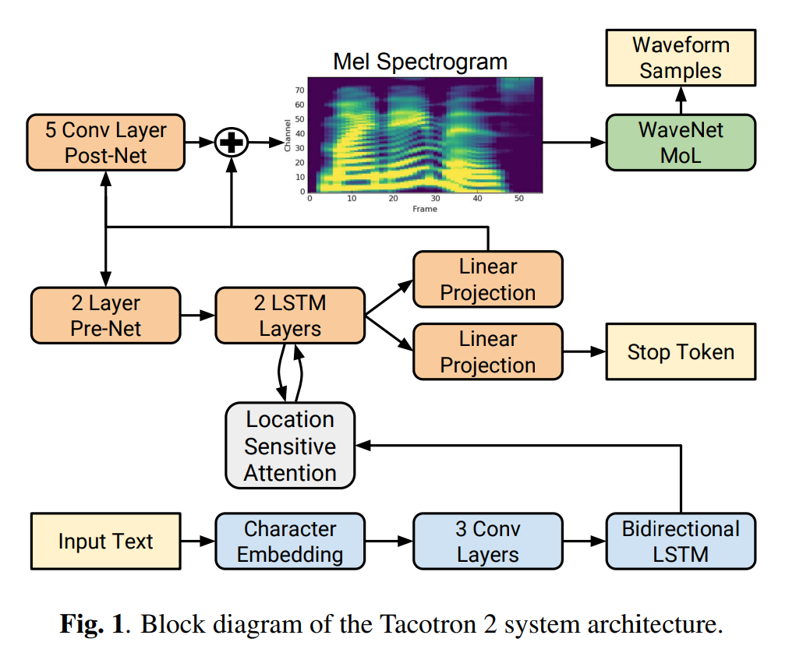
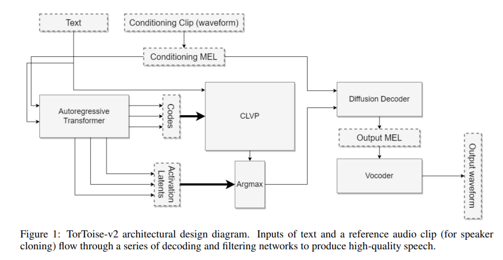
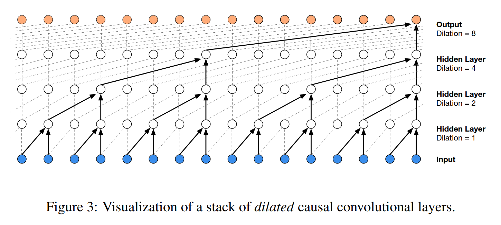

HW4 is going to take time
Don’t expect to finish it at 10:50pm on the night of
Diversity in Neural TTS Models
Neural Text Analysis
Generating Intermediate Representations
Waveform Generation
Preparing for this lecture meant staring wild variability in the face
There are many models and methods which can do this task
Often, ‘new models’ are just recombinations of old models
I wish I could!
Current state of the art models from ElevenLabs, OpenAI, Google, and Amazon are all closed and proprietary
Details are often not published and considered “trade secrets”
It’s not currently possible to teach the state of the art in TTS!
We’re going to focus on these three
Different architectures
Different training methods
Different loss functions
Different methods for generating sound
Text Analysis: How do neural models go from text to phonemes?
Phonemes-to-Intermediate-Representations: How do neural models turn text into a representation of the speech?
Intermediate Representations to Waveforms: How do neural models turn the last step’s output into something audible?
Some ‘end-to-end’ models just say ‘First, do text analysis, then I’m end-to-end!’
Sometimes text analysis is rolled in to building a representation
Sometimes you skip the intermediate representations and generate the wave directly
It’s very possible to do text analysis within the neural model itself
This has the advantage of neural networks to discover prosodic features, rather than having to model it
So, don’t always expect a separate Text Analysis step
Some models (e.g. Tacotron2) use an encoder to ‘feed’ the text into an acoustics-generating decoder
Others just treat Grapheme-to-Phoneme as an encoder task (e.g. DeepVoice)
This has the benefit of optimizing the text analysis while the model itself is being trained
It is always computationally cheaper to look up the word in CMUDict than to find phonemes in a DNN
FastSpeech2 uses old school CMUDict text analysis approaches
“Strip symbols, CMUDict what you can, grapheme-to-phoneme the rest, clean from there”
Same issues, different architecture!
Let’s move on to something new, like…
This is sometimes called ‘the Acoustic model’
This is generally a log-mel-frequency spectrogram (‘mel spectrogram’) of the data
The network is trained to match text to corresponding mel spectrograms
This spectrogram can then be turned into a waveform in a subsequent step
TacoTron2 (Encoder-Decoder)
FastSpeech 2 (Parallel Generation)
TorToise TTS (Diffusion-based Modeling)
Talk to me if you’re curious about training and loss functions
Don’t worry about memorizing everything here
Let’s focus instead on what makes these models different
Each one represents a different approach!
The input is taken through an encoder, and slapped into a decoder
A series of networks are used to create a Mel Frequency Spectrogram
A separate model predicts when to stop generating
This is autoregressive, as it takes the last frame as input for the current frame

It generates the whole spectrogram from the whole input text in a single step
First, it encodes the phoneme-level input as an intermediate representation
Then it uses a ‘variance adapter’ to predict duration, energy, and pitch onto that
It can go straight to Waveforms (‘FastSpeech2s’) or to a Mel Spectrogram
It’s based roughly on image models like StableDiffusion or Dall-E
TorToise uses an autoregressive transformer to encode the text into multiple ‘candidate’ productions
It uses ‘CLVP’ to model correspondence between spectrogram/text pairs, like an image captioner
Then you feed it through a diffusion model to get a spectrogram

“We’ll use a transformer and paired text/image model to create a ‘prompt’, and then feed it to a diffusion model”
The result is something which is very slow, but very nuanced!

… but these three represent some of the more interesting approaches in current use
So now, we have a mel spectrogram representing the input text
How do we turn that back into a waveform?
The Griffin-Lim Algorithm is designed to approximate phase and invert spectrograms
The results are often noisy, and unpleasant
This is mostly presented to nerd-snipe a few of you
The input is a Mel Spectrogram, and the output is a waveform for playback
This involves reconstructing the phase, as well as fine frequency and amplitude differences
This also involves discarding artifacts in the mel spectrogram to approximate the voice
“Here’s a spectrogram, make up a wave that seems like it fits”
The spectrogram is a prompt, not a deterministic input
Wavenet (Sample Prediction)
HiFi-GAN (Spectrogram upscaling and inversion)
Published in 2016 by Google Deepmind
This takes an input and predicts each sample as one of 65,536 values
It is autoregressive, and models each sample with consideration of the previous samples
It uses ‘dilated convolutions’ to capture broader context

Each sample is predicted based on the input and the last samples
The waveform is built up moment-by-moment, and predicted directly
FastSpeech2’s waveform generator is based on WaveNet
Like, directly. Out of the box.
… but there’s another approach!
Each layer effectively upscales the spectrogram, ‘adding back’ information which it thinks was missing
This (presumably) also involves some phase recovery
The final step effectively ‘inverts’ the spectrogram using this information, turning it back into the likely wave
WaveNet: “Guess the next sample based on the input and the last samples”
HiFi-GAN: “Take the spectrogram and make it more and more detailed until we can just invert it”
There are other approaches too
Text Analysis: Let’s turn text into a string of phonemes and prosodic information
Phonemes-to-Intermediate-Representations: Let’s generate a mel spectrogram from that phoneme sequence
Intermediate Representations to Waveforms: Let’s turn that mel spectrogram into a waveform
“Clearly we need a speaker, saying a lot of words”
“… but what should that speaker sound like?”
“… and can we get multiple ‘voices’ out of one model?”
There are many Neural TTS models, with many approaches, and many closed systems
All Neural TTS has to do text analysis somehow
Most models turn the text analysis into some acoustic intermediate representation
Which we then turn into waves using a neural vocoder
Some models collapse some of these steps, but ‘end to end’ isn’t quite the same in TTS as ASR
Neural ASR is ridiculously good
We’re going to have a discussion about the Sociolinguistics of Text-to-Speech models and computer voices
Be thinking about…